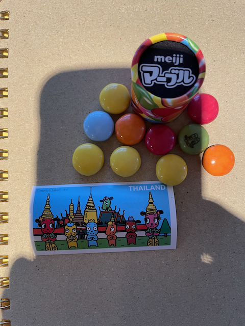

flowchart LR
React[React JS]
Fastify[Fastify Server]
Postgres[Postgres Database]
SurfaceChat[Surface Chat FastAPI]
LLaVa(LLaVa LLM)
SDXL(SDXL + LoRAs)
Zephyr(Zephyr 7B Beta)
FastChat[FastChat FastAPI]
subgraph RedwoodJS
React --> Fastify
Fastify --> Postgres
end
subgraph Custom FastAPI Python Server
Fastify --> SurfaceChat
SurfaceChat --> LLaVa
SurfaceChat --> SDXL
end
subgraph Standard FastChat Python Server
Fastify --> FastChat
FastChat --> Zephyr
end
KT Villa Overview
How I ended up building a booking website with too much Generative AI
The origins for KT Villa
KT Villa is a nifty little booking website I hand built to manage trips to my winter lodge in Hakuba Japan. For entirely silly reasons I infused it with way more Generative AI than needed. Why? Well it all starts with little Meiji Chocolates in Japan where each tube comes with some delightful little sticker representing a country somewhere in the world. I’ve been collecting these over the years and thought it would be fun to do the same thing with bar soap, each purchase comes with a little trading card that has an AI generated image and an AI generated character profile. Like NFTs, people could “claim” them on a website but unlike NFTs they’re intentionally worthless. Seems pretty doable but it requires a soap company selling real products, which I aspire to have one day but currently do not (message me if you’re keen to do something silly like this plz).

I do however have an empty winter lodge in Hakuba Japan, a prime place to enjoy the snow. And I have many friends who wish to stay there on the regular. So instead of generated images and character cards for soap purchases, I did the same thing for trips to my winter lodge. And bam, that’s how we get KT Villa. As a fun aside, the Villa part comes from a previous name for our house, Chill Villa, when it was on AirBnB and the KT part comes from nicknames for my wife and myself, Koala and Tree. Cute right?

Pretty much all the hard part of the site is just your regular old booking website challenges. Managing users, managing booking details, making sure two trips don’t overlap, making sure timezones are all done right. Making it look visually okay. It’s an entirely normal website except when you make a booking, you get a SDXL (Stable Diffusion XL from Stability AI) generated image. To boot, I setup SDXL to run a different themed LoRA adapter every two weeks so with a bit of prompt magic and adapter swapping, every trip will generate a fairly unique image.

But I wanted something even sillier. Since I’ve been contracting with a team focusing on themed chatbots, I wanted to take it to the extreme. For every generated imaged, I let users create a character profile card using a multi-modal LLM. That gives us a pretty unpredictable chatbot profile and when paired with a decent small chat trained LLM, users can try chatting with their booking image and see what silliness entails. With time I also plan to somehow cram in Retrieval Augmented Generation somewhere using LangChain.

I honestly doubt any of this is really useful, but it felt like a fun way to try blending together real services and products with a little bit of AI flair, predominantly for the purpose of zaney entertainment. And with the state of things today, it was pretty easy to do even with entirely self hosted models. Let’s find out just how easy.
The Tech Stack
When building this, I wanted to keep to a fairly standard tech stack that let me easily separate out potentially re-usable parts from all the booking-specific parts. I also wanted to leverage tools I was already pretty familiar with since this is mostly to simplify managing my winter lodge and only partially for fun. That led to a few key decisions, RedwoodJS for the primary client side experience, Postgres for all database stuff, FastAPI for any custom LLM servers, and ready to go server like FastChat for whatever could fit in it.
That’s how we got to this horrible monstrosity with three docker images and way too many containers running on my single NVIDIA RTX A6000 powered server. But with the absurd fleet of containers and some simple docker compose scripts, its actually pretty simple.
If you haven’t tried it yet, RedwoodJS is a wrapper around a ReactJS client side experience and a Fastify backend Node.JS server. It pairs well with a database like Postgres and does a bunch of GraphQL magic that I don’t like thinking about. I find it a lot easier to get started than something like Next.JS since Redwood doesn’t have any weird blending between client side and server side behavior and just templates out the annoying parts. If you like something straight forward, I very much recommend RedwoodJS. And pair it with Daisy UI for styling everything and you can pretty quickly get a nice looking hand crafted website.
For all the image related components, both generating images and turning images into character profiles, I hacked together a very lightweight FastAPI python server that I call Surface Chat. Its pretty much me glueing together various transformers API tutorials so that I can run a baseline SDXL model and swap in a bunch of different LoRA adapters on demand. Crammed in is LLaVA for multi-modal models mostly because I didn’t know of any open source framework that supported this with a standard format, but with OpenAI’s releases that will likely change soon.
Finally, for the chat portion and other random places I might need pure a generative text model, I spun up FastChat with a single Zephyr 7B Beta model. FastChat has their own suite of tools for training but I primarily wanted their nice split framework so I can scale the heavy GPU portion easily and it’s support for various serving methods. And there’s probably newer options for this step but I haven’t investigated them yet. That is somewhere in my future.
What Next
Whew that was a lot. This was really a whirlwind summary of what KT Villa is all about, why I made it, and a light sketch of what went into it. Up next I want to go into more detail about what’s happening inside SurfaceChat and generally what I like and don’t like about FastChat. Lastly I’ll go in depth through the RedwoodJS server and show where all the generative AI steps tie in and demonstrate how straightforward it can be with this kind of separation. Expect those in coming weeks.
P.S. If you want to make a cute website like this, take @HamelHusain’s advice and look at Quarto. I used to use Jekyll and this is so so much better.